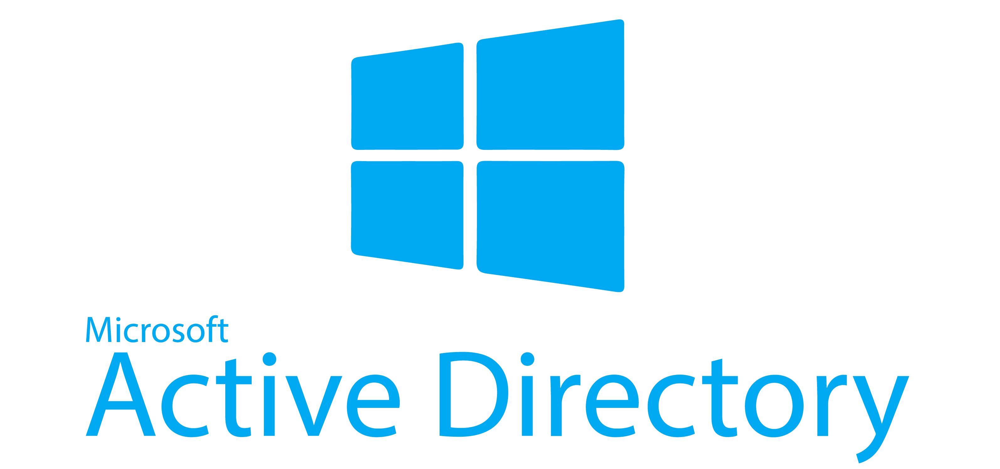
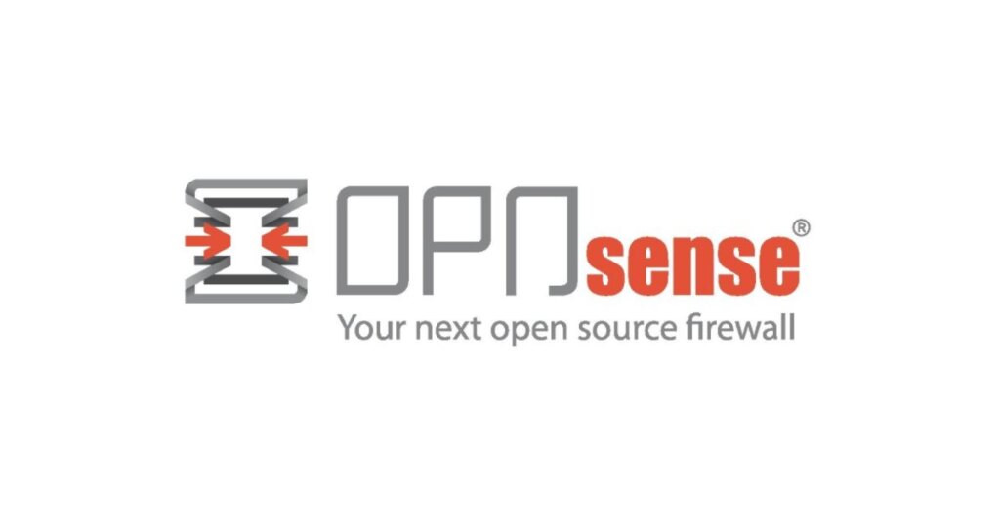
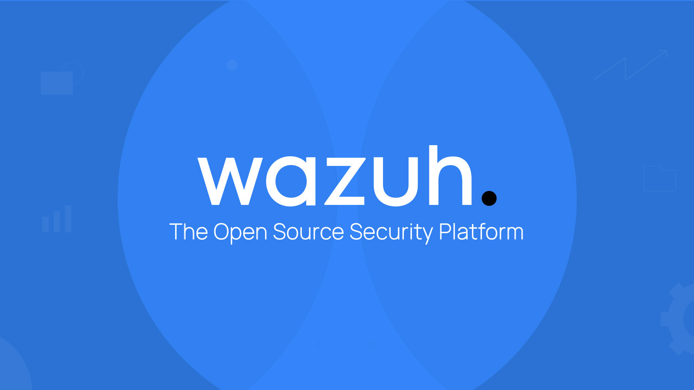

VPN SERVER
Secure remote access simulation via OpenVPN/WireGuard.
A fully isolated, virtualized corporate security environment built to simulate complex defense strategies, advanced log correlation, and threat hunting workflows.
Secure remote access simulation via OpenVPN/WireGuard.
Enabling Sensei (Zenarmor) for Layer 7 transparency.
Deploying Elastic Security agents for advanced protection.
Suricata-based traffic analysis and rejection.
The backbone of the enterprise. Managed via Windows Server 2022 to authenticate users, enforce GPO policies, and secure the Kerberos/LDAP authentication chain.
EXPLORE AD DEEP DIVE
Acts as the primary gateway separating internal vLANs from the WAN. Responsible for routing, NAT, and advanced IDS/IPS features to protect the lab subnet.
EXPLORE FW DEEP DIVE
The centralized logging and correlation engine. Pulls events from Sysmon (Windows), Auditd (Linux), and OPNsense logs to provide a unified 24/7 monitoring dashboard.
EXPLORE SIEM DEEP DIVE
Description goes here.